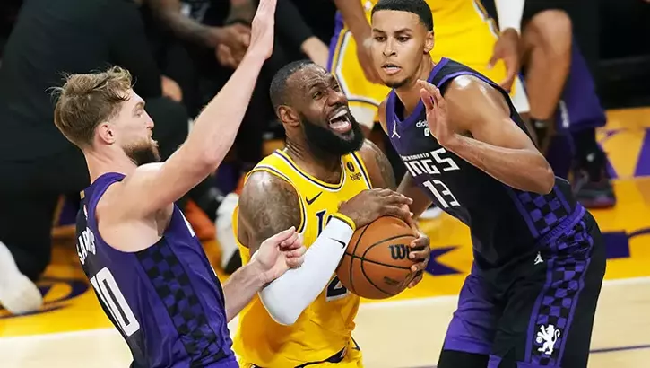

LeBron James’in triple-double'ı Lakers'a yetmedi
NBA’de Sacramento Kings, konuk olduğunu Los Angeles Lakers'ı 125-110’luk skorla mağlup ederek, üst üste 4. galibiyetini aldı. Sacramento’da Domantas Sabonis 29 sayı, 16 ribaund ile oynarken, Lakers’ta LeBron James’in 28 sayı, 11 asist ve 10 ribaund ile triple-double performansı galibiyet yetmedi.
NBA’de normal sezon 8 karşılaşma ile devam etti. Sacramento Kings, deplasmanda karşılaştığı Los Angeles Lakers'ı 125-110’luk skorla yenerek üst üste 4. galibiyetini elde etti. Sacramento’da Domantas Sabonis 29 sayı, 16 ribaund, Kevin Huerter ve De'Aaron Fox da 28'er sayı ile oynayarak galibiyete katkı verdi.
Bu sezonki 6. yenilgisini alan Lakers'ta ise LeBron James 28 sayı, 11 asist ve 10 ribaund ile triple-double yaparken, D'Angelo Russell da 28 sayı, 5 asistle mücadele etti.
NBA’de günün sonuçları şöyle:
Washington Wizards: 117 - Dallas Mavericks: 130
Atlanta Hawks: 114 - New York Knicks: 116
Philadelphia 76ers: 107 - Boston Celtics: 117
Toronto Raptors: 112 - Milwaukee Bucks: 128
Chicago Bulls: 94 - Orlando Magic: 96
Phoenix Suns: 133 - Minnesota Timberwolves: 115
Trail Blazers: 95 - Cleveland Cavaliers: 109
Los Angeles Lakers: 110 - Sacramento Kings: 125